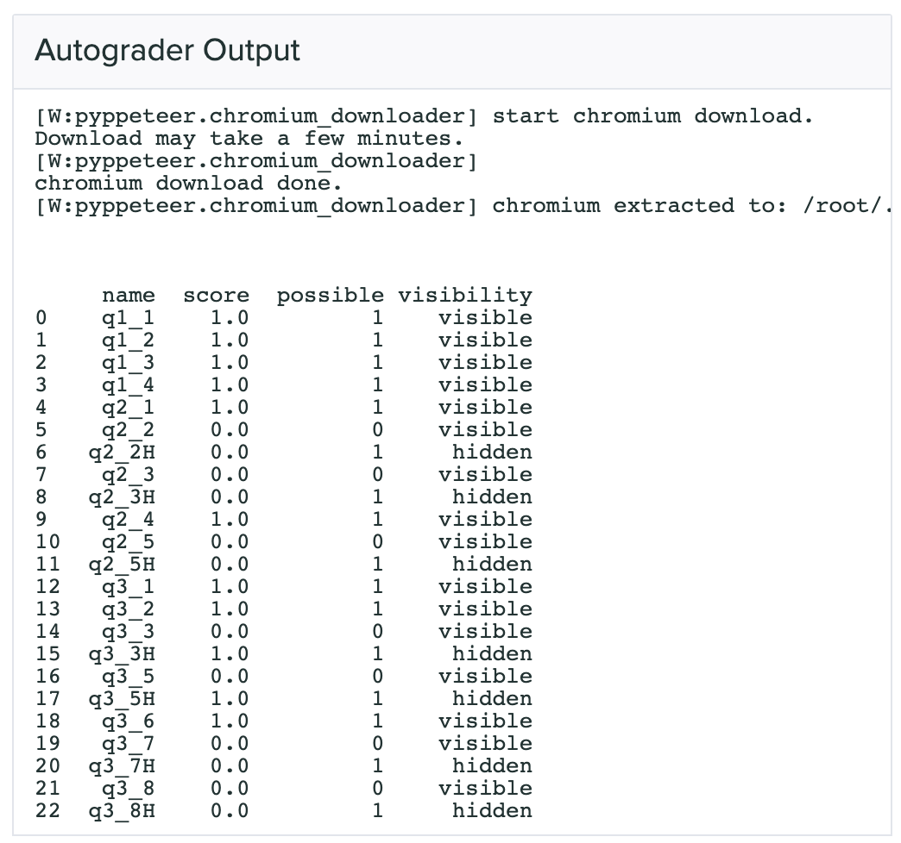

Otter-Grader also allows instructors to use Gradescope’s autograding system to collect and grade students’ submissions. This section assumes that instructors are familiar with Gradescope’s interface and know how to set up assignments on Gradescope; for more information on using Gradescope, see their help pages.
The tests that are used by the Gradescope autograder are the same as those used in other uses of Otter, but there is one important field that is relevant to Gradescope that is not pertinent to any other uses.
As noted in the second bullet here, the "hidden" key of each test case indicates the visibility of that specific test case. If a student passes all tests, they are shown a successful check. If they pass all public tests but fail hidden tests, they are shown a successful check but a second output is shown below that for instructors only, showing the output of the failed test. If students fail a public test, students are shown the output of the failed test and there is no second box.
"hidden"
For more information on how tests are displayed to students, see below.
To use Otter with Gradescope’s autograder, you must first generate a zipfile that you will upload to Gradescope so that they can create a Docker image with which to grade submissions. Otter’s command line utility otter generate allows instructors to create this zipfile from their machines.
otter generate
Before using otter generate, you should already have
written tests for the assignment
created a Gradescope autograder assignment
have collected extra requirements into a requirements.txt file (see here).
For the rest of this page, assume that we have the following directory structure:
| hw00-dev | - data.csv | - hw00-sol.ipynb | - hw00.ipynb | - requirements.txt | - utils.py | tests | - q1.py | - q2.py ... | hidden-tests | - q1.py | - q2.py ...
Also assume that we have cded into hw00-dev.
cd
hw00-dev
The general usage of otter generate is to create a zipfile at some output path (-o flag, default ./) which you will then upload to Gradescope. otter generate has six optional flags:
-o
./
-t
--tests-path
./tests
--output-path
-r
--requirements
./requirements.txt
--threshold
--points
--show-results
If you do not specify -t or -o, then the defaults will be used. If you do not specify -r, Otter looks in the working directory for requirements.txt and automatically adds it if found; if it is not found, then it is assumed there are no additional requirements. There is also an optional positional argument that goes at the end of the command, files, that is a list of any files that are required for the notebook to execute (e.g. data files, Python scripts).
requirements.txt
files
The simplest usage in our example would be
This would create a zipfile with the tests in ./tests and no extra requirements or files. If we needed data.csv in the notebook, our call would instead become
data.csv
otter generate data.csv
Note that if we needed the requirements in requirements.txt, our call wouldn’t change, since Otter automatically found ./requirements.txt.
Now let’s say that we maintained to different directories of tests: tests with public versions of tests and hidden-tests with hidden versions. Because I want to grade with the hidden tests, my call then becomes
tests
hidden-tests
otter generate -t hidden-tests data.csv
Now let’s say that I need some functions defined in utils.py; then I would add this to the last part of my otter generate call:
utils.py
otter generate -t hidden-tests data.csv utils.py
The Gradescope generator supports providing a pass/fail threshold. A threshold is passed as a float between 0 and 1 such that if a student receives at least that percentage of points, they will receive full points as their grade and 0 points otherwise.
The threshold is specified with the --threshold flag:
otter generate -t hidden-tests data.csv --threshold 0.75
For example, if a student passes a 2- and 1- point test but fails a 4-point test (a 43%) on a 25% threshold, they will get all 7 points. If they only pass the 1-point test (a 14%), they will get 0 points.
By default, the number of points possible on Gradescope is the sum of the point values of each test. This value can be overrided, however, to some other value using the --points flag, which accepts an integer. Then the number of points awarded will be the provided points value scaled by the percentage of points awarded by the autograder.
For example, if a student passes a 2- and 1- point test but fails a 4-point test, they will receive (2 + 1) / (2 + 1 + 4) * 2 = 0.8571 points out of a possible 2 when --points is set to 2.
As an example, the command below scales the number of points to 3:
otter generate -t hidden-tests data.csv --points 3
The generator lastly allows intructors to specify whether or not the stdout of the grading process (anything printed to the console by the grader or the notebook) is shown to students. The stdout includes a summary of the student’s test results, including the points earned and possible of public and hidden tests, as well as the visibility of tests as indicated by test["hidden"].
test["hidden"]
This behavior is turned off by default and can be turned on by passing the --show-results flag to otter generate.
otter generate -t hidden-tests data.csv --show-results
If --show-results is passed, the stdout will be made available to students only after grades are published on Gradescope. The next section details more about what is included in the stdout.
This section details how results are displayed to students and instructors on Gradescope.
Once a student’s submission has been autograder, the Autograder Results page will show the stdout of the grading process in the “Autograder Output” box and the student’s score in the side bar to the right of the output. The stdout includes a DataFrame that contains the student’s score breakdown by question and a summary of the information about test output visibility at the top of this page:

Below the autograder output, each test case is broken down into boxes. If there is no output for the box, then that test was passed. If a test is failed, then the usual test failure output is displayed.
Instructors will be able to see all tests. The visibility of a test to students is indicated to instructors by the icon (all tests with this icon are hidden to students). As noted earlier, if a student passes all public tests for a question but fails a hidden test, two boxes are shown to the instructor, of which only the first is visibile to the student:
On submission, students will only be able to see the results of those tests for which test["hidden"] evaluates to True (see Test Files for more info). If test["hidden"] is False or not specified, then test is hidden.
True
False
test
If --show-results was specified when constructing the autograder zipfile, then the autograder output from above will be shown to students after grades are published on Gradescope. Students will not be able to see the results of hidden tests nor the tests themselves, but they will see that they failed some hidden test in the printed DataFrame from the stdout.
Note that, because some tests are hidden, students will never see the autograder score in the right sidebar; instead, their score will only show as a dash - out of the points possible. Therefore, the only way for students to calculate their autograder score is to use the DataFrame printed to the stdout if --show-results is passed.
-